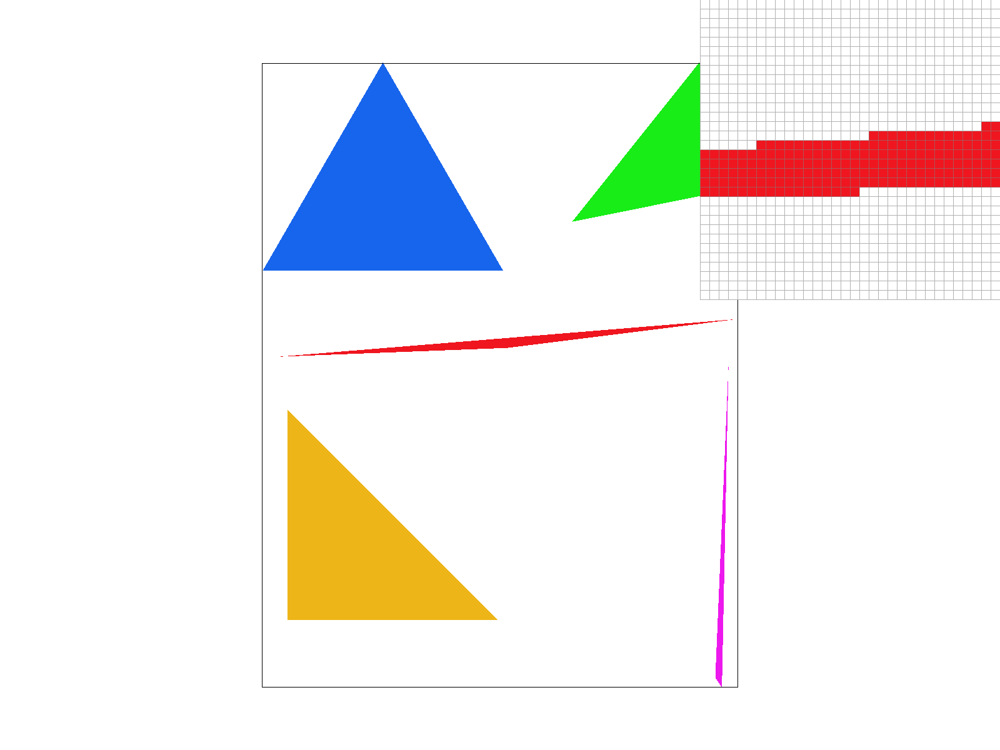

To rasterize triangles, we first calculate the bounding box given the coordinates of the vertices of the triangle to improve efficiency of our algorithm. Then, we check to see if the (x, y) image coordinate is inside the triangle using the line tests discussed in lecture. Finally, we fill the pixel by passing the (x, y) coordinate into our sample buffer, which is then resolved to the RGB frame buffer.
Our algorithm is no worse than one that checks each sample within the bounding box of the triangle because this is exactly what our algorithm does - we check each sample within the bounding box of the triangle whether or not the point is inside the triangle by iterating through each (x, y) coordinate inside the bounding box.
